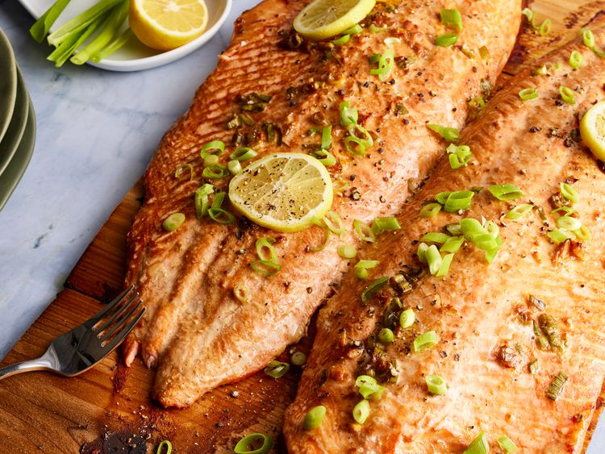

Salmon

Description
Salmon is a popular fish that is both delicious and nutritious. It is a great source of omega-3 fatty acids, which are essential for brain health and may reduce the risk of heart disease. Salmon can be prepared in a variety of ways, including grilling, baking, and pan-searing.
Ingredients
- 4 salmon fillets
- 1/4 cup olive oil
- 1/4 cup lemon juice
- 2 cloves garlic, minced
- 1 teaspoon dried basil
- 1 teaspoon dried oregano
- 1 teaspoon salt
- 1/2 teaspoon black pepper
Steps
- In a small bowl, whisk together olive oil, lemon juice, garlic, basil, oregano, salt, and pepper.
- Place salmon fillets in a shallow dish and pour marinade over the fish. Cover and refrigerate for at least 30 minutes.
- Preheat grill for medium heat and lightly oil the grate.
- Remove salmon from marinade and discard the remaining marinade. Grill salmon for 6 to 8 minutes per side, or until the fish flakes easily with a fork.